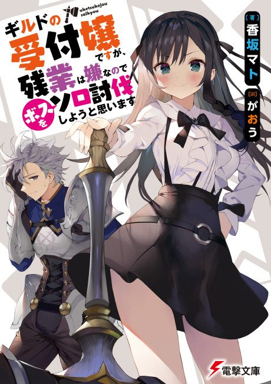

I May Be a Guild Receptionist, but I’ll Solo Any Boss to Clock Out on Time
ギルドの受付嬢ですが、残業は嫌なのでボスをソロ討伐しようと思います
Alina, a guild receptionist who just wants to go home on time, secretly clears dungeon bosses herself to stop the overtime.
After the anime, read the light novel from Volume 4.
6.6AniList score
—Animeter, no votes yet
12episodes
Rate it or report where you stopped
Anime finished. Where does the story go next?
Start at Volume4
The anime adapts the story up to the end of volume 3, so start at volume 4.
13ongoing
Season 1Start reading here